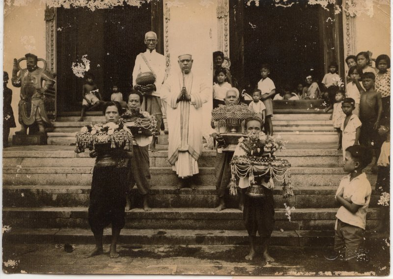

เลือกหัวข้อที่อยากรู้
Digital Guide นี้จัดทำขึ้นเพื่อช่วยให้ผู้ชมเรียนรู้เรื่องราวของวัดจากสถานที่จริง และกลับมาศึกษารายละเอียดเพิ่มเติมได้ด้วยตัวเอง
ประวัติความเป็นมา
วัดมัชฌิมาวาสวรวิหารเป็นวัดสำคัญของจังหวัดสงขลา มีประวัติความเป็นมาย้อนไปถึงสมัยอยุธยาตอนปลาย เดิมเรียกว่า “วัดยายศรีจันทร์” หรือ “วัดยายสีจันทร์” และต่อมาได้รับการเปลี่ยนชื่อเป็น “วัดมัชฌิมาวาส”
ปัจจุบันเป็นพระอารามหลวงชั้นตรี ชนิดวรวิหาร และเป็นแหล่งที่มีทั้งโบราณสถานและงานศิลปกรรมที่ช่วยสะท้อนประวัติศาสตร์ของพื้นที่

สถาปัตยกรรม
เมื่อเดินชมวัด ลองสังเกตรูปทรงอาคาร หลังคา หน้าบัน ประตู หน้าต่าง และลวดลายตกแต่ง รายละเอียดเหล่านี้ช่วยให้เห็นฝีมือและแนวคิดของงานช่างในแต่ละช่วงเวลา
พระอุโบสถ
อาคารสำคัญที่เป็นจุดเด่นของการชมสถาปัตยกรรมและจิตรกรรมภายในวัด
รายละเอียดงานช่าง
สังเกตหน้าบัน ลวดลาย ประตู หน้าต่าง และองค์ประกอบตกแต่งต่าง ๆ
โบราณสถานภายในวัด
พื้นที่วัดมีองค์ประกอบทางประวัติศาสตร์หลายส่วนที่สามารถเรียนรู้จากสถานที่จริง
จิตรกรรมฝาผนัง
จิตรกรรมภายในพระอุโบสถเป็นหนึ่งในจุดสำคัญของวัด รายละเอียดในภาพสามารถช่วยให้ผู้ชมมองเห็นตัวละคร เหตุการณ์ เครื่องแต่งกาย และวิถีชีวิตที่ศิลปินถ่ายทอดไว้
🔎 วิธีชมจิตรกรรม
มองภาพรวม
ดูองค์ประกอบของภาพและเรื่องราวโดยรวม
ซูมรายละเอียด
สังเกตตัวละคร เสื้อผ้า สิ่งของ และกิจกรรมต่าง ๆ
เชื่อมโยงกับอดีต
ลองมองภาพในฐานะหลักฐานทางศิลปะที่ช่วยเล่าเรื่องผู้คนในอดีต
หมายเหตุ: จิตรกรรมฝาผนังภายในพระอุโบสถได้รับการดำเนินงานด้านการอนุรักษ์โดยกรมศิลปากร
เทคโนโลยีช่วยต่อยอดการเรียนรู้
เว็บไซต์นี้เป็นส่วนเสริมของวิดีโอ ผู้ชมสามารถกลับมาอ่านข้อมูล ดูภาพ และทบทวนรายละเอียดของวัดได้ด้วยตัวเอง
QR Code
สแกน QR จากวิดีโอเพื่อเข้ามาที่ Digital Guide
ภาพและรายละเอียด
รวมข้อมูลแบบอ่านง่าย เพื่อให้ชมรายละเอียดได้มากกว่าที่วิดีโอมีเวลาเล่า
AI เพื่อการสื่อสาร
ในวิดีโอมีภาพจำลองอดีตที่สร้างด้วย AI โดยระบุให้ชัดว่าเป็นภาพจำลอง ไม่ใช่ภาพเหตุการณ์จริง
แหล่งข้อมูล
กรมศิลปากร — ข้อมูลประวัติวัดมัชฌิมาวาสวรวิหาร จังหวัดสงขลา
กรมศิลปากร — ข้อมูลการอนุรักษ์จิตรกรรมฝาผนังภายในพระอุโบสถ
Hatyaifocus — แหล่งภาพประวัติศาสตร์ที่ใช้ประกอบการนำเสนอ
เว็บไซต์นี้จัดทำขึ้นเพื่อประกอบโครงงานการผลิตวิดีโอส่งเสริมศิลปวัฒนธรรมท้องถิ่นด้วยเทคโนโลยี
เข้าชม Digital Guide
เมื่อเผยแพร่เว็บไซต์แล้ว ให้นำ URL ของเว็บไซต์ไปสร้าง QR Code และใส่ในวิดีโอ เพื่อให้ผู้ชมเข้ามาศึกษาข้อมูลเพิ่มเติมได้
ตอนนี้ช่อง QR ในหน้านี้เป็นพื้นที่สำหรับใส่ QR ของเว็บจริงหลัง Publish
พื้นที่สำหรับ QR CODE
สร้าง QR หลังได้ URL จริง